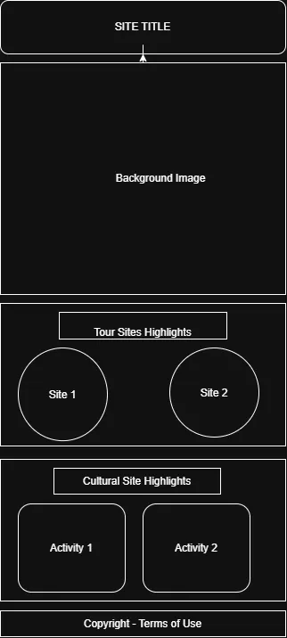
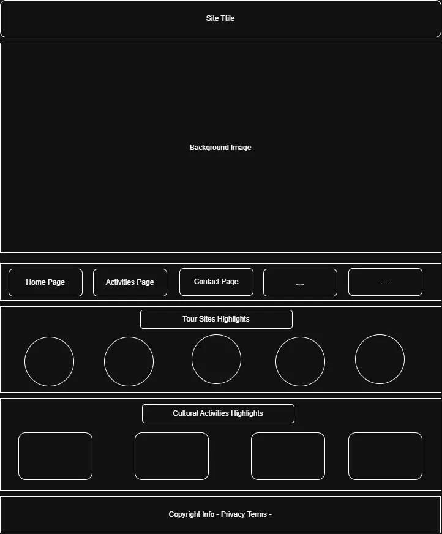

Site Plan for WDD131 Project
Site Name
Victoria Falls Activity Guide
This name has been chosen as it is SEO-friendly and immediately informs visitors of what the site is about.
Domain: VicFallsActivityGuide.com
Site Purpose
The purpose of this website is to provide visitors with information about activities, attractions, and accommodations in Victoria Falls, Zimbabwe. It aims to serve as a comprehensive guide for tourists planning their visit to the area.
Scenario
- What makes Victoria Falls unique?
- What are the best local activities and attractions that can make an itinerary effectively?
- What are the reviews and recommendations from other visitors?
Color Schema
The color schema for the website will be based on the natural colors of Victoria Falls, including red and greens to represent the Zambezi River and surrounding landscapes.
| Use | Name/Hex | Color |
|---|---|---|
| Text | Graphite - #2D2D2A | |
| Page Background Color | HoneyDew - #EAF2E3 | |
| Section/Card Background | Cherry Blossom - #EDAFB8 | |
| Call To Action | Jade Green - #43B93B | |
| Warnings | Lipstick Red - #EC0B43 |
Typography
Body Font: "Arimo", a clean, readable font.
Heading Font: "Playfair Display"; a more elegant font for headings.
Wireframes

